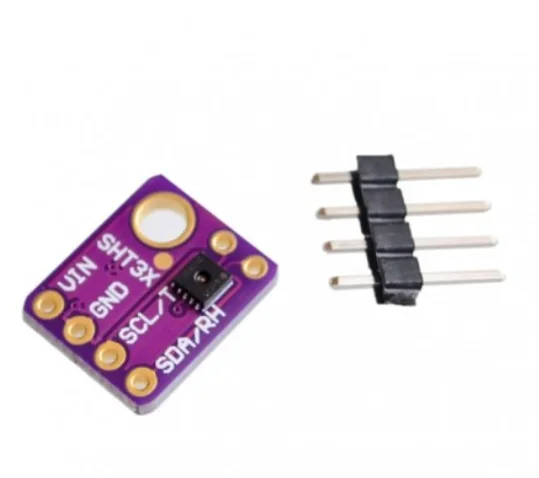
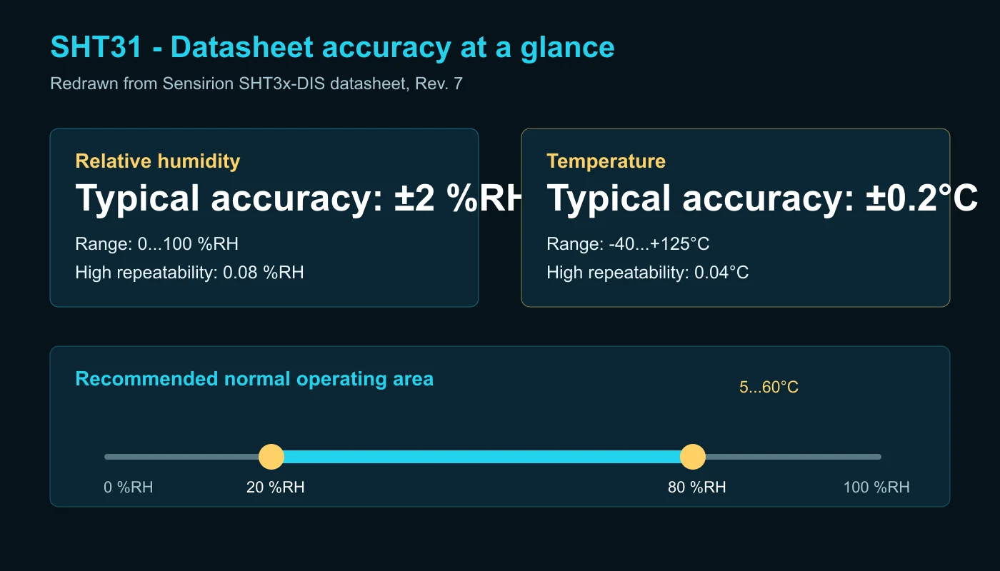
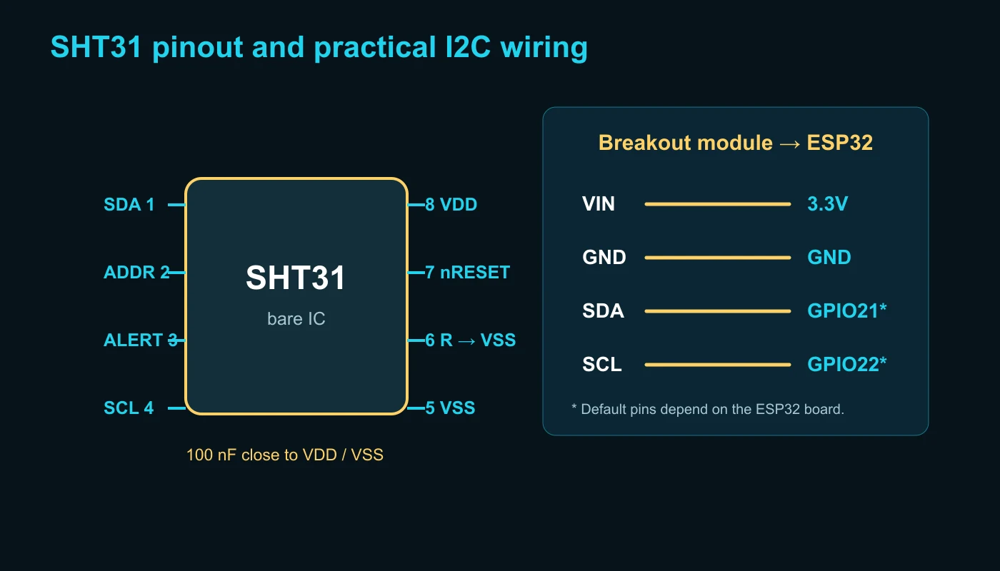
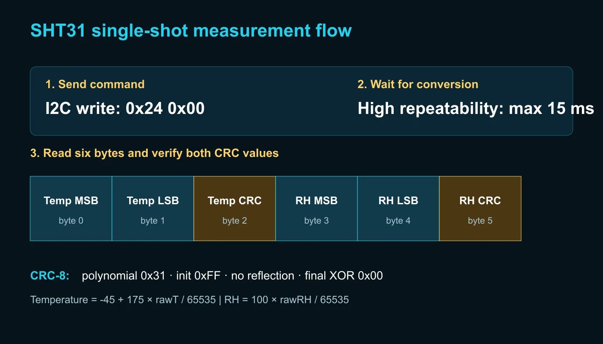

Accuracy یا دقت
فاصله اندازهگیری سنسور از مقدار واقعی است. مقدار تیپیک SHT31 برای رطوبت ±2 %RH و برای دما در بخش اصلی بازه ±0.2°C است؛ نمودار دقت نشان میدهد این عدد در همه دماها یکسان نیست.
آموزش سنسور دما و رطوبت دیجیتال
در این راهنمای جامع، ماژول SHT31 را از روی دیتاشیت رسمی Sensirion میشناسیم، سیمکشی و I2C را انجام میدهیم، دما و رطوبت را با کتابخانه و بدون کتابخانه میخوانیم و با CRC، Heater، خطاهای اندازهگیری و اصول نصب درست آشنا میشویم.

SHT31-DIS یک سنسور دیجیتال کالیبرهشده برای اندازهگیری همزمان دما و رطوبت نسبی است. خروجی دیجیتال، جبرانسازی داخلی، اندازه کوچک و دقت مناسب باعث شده این قطعه در دیتالاگرها، ترموستات، گلخانه، تجهیزات پزشکی غیرتشخیصی، انبار، تهویه مطبوع، ایستگاه هواشناسی و پروژههای IoT استفاده شود.
این خانواده چند عضو دارد. SHT30، SHT31 و SHT35 از نظر فرمانهای ارتباطی بسیار شبیهاند، اما حدود دقت آنها یکسان نیست. هنگام خرید، نوشته روی قطعه و شماره دقیق سفارش را بررسی کنید؛ نام عمومی «SHT3x» بهتنهایی برای نتیجهگیری درباره دقت کافی نیست.
برای انتخاب سنسور فقط به یک عدد بزرگ روی صفحه فروشگاه اکتفا نکنید. جدولهای Electrical Specifications را همراه با شرایط آزمون بخوانید:
فاصله اندازهگیری سنسور از مقدار واقعی است. مقدار تیپیک SHT31 برای رطوبت ±2 %RH و برای دما در بخش اصلی بازه ±0.2°C است؛ نمودار دقت نشان میدهد این عدد در همه دماها یکسان نیست.
پراکندگی چند اندازهگیری پشتسرهم است، نه دقت مطلق. در حالت High، تکرارپذیری رطوبت 0.08 %RH و دما 0.04°C است.
کوچکترین گام عدد خروجی است. رزولوشن 0.01°C به معنی دقت 0.01°C نیست؛ دقت واقعی را جدول Accuracy تعیین میکند.
زمان پاسخ رطوبت حدود 8 ثانیه و زمان پاسخ دما بیش از 2 ثانیه ذکر شده است. رانش بلندمدت رطوبت در شرایط عادی معمولاً کمتر از 0.25 %RH در سال است.

| پارامتر | مقدار مهم | برداشت عملی |
|---|---|---|
| بازه رطوبت | 0 تا 100 %RH | کارکرد طولانی خارج از 20 تا 80 %RH میتواند جابهجایی موقت خروجی ایجاد کند. |
| بازه دما | -40 تا +125°C | دقت در لبههای بازه کمتر از محدوده معمول اتاق است؛ نمودار دقت را بخوانید. |
| Hysteresis رطوبت | حدود ±0.8 %RH | در مسیر افزایش و کاهش رطوبت، خروجی دقیقاً روی یک منحنی قرار نمیگیرد. |
| زمان اندازهگیری High | تیپیک 12.5ms، حداکثر 15ms | در حالت Single-shot پیش از خواندن داده باید تبدیل کامل شود. |
| جریان هنگام اندازهگیری | تیپیک 600µA | برای باتری، نرخ نمونهبرداری و حالت Single-shot را متناسب انتخاب کنید. |

| پایه ماژول | Arduino Uno | ESP32 | توضیح |
|---|---|---|---|
| VIN / VCC | 5V یا 3.3V مطابق ماژول | ترجیحاً 3.3V | ولتاژ مجاز برد آماده را از فروشنده یا شماتیک بررسی کنید. |
| GND | GND | GND | زمین مشترک مدار |
| SDA | A4 | پایه SDA برد؛ اغلب GPIO21 | خط داده I2C با Pull-up |
| SCL | A5 | پایه SCL برد؛ اغلب GPIO22 | خط کلاک I2C با Pull-up |
SDA و SCL خروجی Open-drain هستند و به مقاومت Pull-up نیاز دارند. بسیاری از ماژولها این مقاومتها را نصب کردهاند. موازی شدن Pull-up چند ماژول مقاومت معادل را کم میکند و ممکن است به باس فشار بیاورد. مقدار مناسب به ولتاژ، فرکانس و ظرفیت کل باس بستگی دارد.
پایه ADDR آدرس را تعیین میکند: اتصال به VSS معمولاً آدرس 0x44 و اتصال به VDD آدرس 0x45 میدهد. این قابلیت اجازه میدهد دو SHT31 روی یک باس استفاده شوند.
در حالت Single-shot، میکروکنترلر یک فرمان میفرستد، سنسور یک بار اندازهگیری میکند و سپس داده خوانده میشود. این حالت برای مصرف پایین و نمونهبرداری آرام مناسب است. در حالت Periodic، سنسور با نرخ 0.5 تا 10 نمونه بر ثانیه اندازهگیری میکند و نتیجه با فرمان Fetch Data خوانده میشود.
| حالت Single-shot | High | Medium | Low |
|---|---|---|---|
| Clock stretching غیرفعال | 0x2400 | 0x240B | 0x2416 |
| Clock stretching فعال | 0x2C06 | 0x2C0D | 0x2C10 |
برای شکستن حالت Periodic از 0x3093 و برای Soft Reset از 0x30A2 استفاده میشود. در نرخهای بالا، اندازهگیری پیوسته میتواند تراشه را کمی گرم کند و دمای خواندهشده را بالا ببرد؛ نرخ را فقط به اندازه نیاز پروژه انتخاب کنید.

پس از فرمان اندازهگیری، شش بایت خوانده میشود. مقدار خام 16 بیتی با رابطههای زیر تبدیل میشود:
temperatureC = -45.0 + 175.0 * rawTemperature / 65535.0;
relativeHumidity = 100.0 * rawHumidity / 65535.0;برای اطمینان از سالم بودن انتقال، هر دو بخش CRC جداگانه دارند. CRC-8 این خانواده با چندجملهای 0x31 و مقدار آغازین 0xFF محاسبه میشود. در محصول واقعی، بهخصوص روی کابل بلند، حذف بررسی CRC تصمیم درستی نیست.
0x44 را امتحان کنید.#include <Wire.h>
#include <Adafruit_SHT31.h>
Adafruit_SHT31 sht31 = Adafruit_SHT31();
void setup() {
Serial.begin(115200);
Wire.begin();
if (!sht31.begin(0x44)) {
Serial.println("SHT31 not found");
while (true) delay(10);
}
}
void loop() {
const float temperature = sht31.readTemperature();
const float humidity = sht31.readHumidity();
if (!isnan(temperature) && !isnan(humidity)) {
Serial.printf("T: %.2f C | RH: %.2f %%\n", temperature, humidity);
} else {
Serial.println("Read error");
}
delay(2000);
}کد زیر فرمان High repeatability بدون Clock stretching را میفرستد، 15 میلیثانیه صبر میکند، شش بایت را میخواند و CRC هر بخش را کنترل میکند. در بردهایی که پایه پیشفرض I2C متفاوت است، از Wire.begin(SDA_PIN, SCL_PIN) استفاده کنید.
#include <Wire.h>
constexpr uint8_t SHT31_ADDRESS = 0x44;
uint8_t crc8(const uint8_t *data, size_t len) {
uint8_t crc = 0xFF;
for (size_t i = 0; i < len; ++i) {
crc ^= data[i];
for (uint8_t bit = 0; bit < 8; ++bit)
crc = (crc & 0x80) ? (crc << 1) ^ 0x31 : (crc << 1);
}
return crc;
}
bool readSHT31(float &t, float &rh) {
Wire.beginTransmission(SHT31_ADDRESS);
Wire.write(0x24);
Wire.write(0x00);
if (Wire.endTransmission() != 0) return false;
delay(15);
if (Wire.requestFrom(SHT31_ADDRESS, (uint8_t)6) != 6) return false;
uint8_t data[6];
for (uint8_t &byte : data) byte = Wire.read();
if (crc8(data, 2) != data[2] || crc8(data + 3, 2) != data[5]) return false;
const uint16_t rawT = (uint16_t(data[0]) << 8) | data[1];
const uint16_t rawRH = (uint16_t(data[3]) << 8) | data[4];
t = -45.0f + 175.0f * rawT / 65535.0f;
rh = 100.0f * rawRH / 65535.0f;
return true;
}
void setup() {
Serial.begin(115200);
Wire.begin();
}
void loop() {
float temperature, humidity;
if (readSHT31(temperature, humidity))
Serial.printf("T: %.2f C | RH: %.2f %%\n", temperature, humidity);
else
Serial.println("I2C or CRC error");
delay(2000);
}گرمکن داخلی برای بررسی و مدیریت شرایط خاص مانند میعان طراحی شده است؛ روشن بودن آن دمای خود سنسور را افزایش میدهد و در همان زمان، عدد دمای محیط و رطوبت معتبر نیست. Heater را دائماً روشن نگذارید و آن را جایگزین طراحی مکانیکی درست نکنید.
| نشانه | علتهای محتمل | راهحل |
|---|---|---|
| سنسور پیدا نمیشود | آدرس اشتباه، جابهجایی SDA/SCL، نبود زمین مشترک | اسکنر I2C را اجرا و آدرسهای 0x44 و 0x45 را بررسی کنید. |
| دما بیشتر از محیط است | گرمای برد، نرخ نمونهبرداری زیاد یا Heater روشن | فاصله حرارتی، نرخ کمتر و وضعیت Heater را بررسی کنید. |
| رطوبت ثابت یا غیرعادی | محفظه بسته، آلودگی شیمیایی یا میعان | تهویه، جانمایی و شرایط نگهداری سنسور را اصلاح کنید. |
| خطای تصادفی | Pull-up نامناسب، کابل بلند، نویز یا تغذیه ضعیف | CRC، خازن 100nF، شکل موج I2C و زمین را بررسی کنید. |
| سنسور | اندازهگیری | مزیت اصلی | مناسب برای |
|---|---|---|---|
| SHT31 | دما و رطوبت | دقت، پاسخ و رابط I2C مناسب | اندازهگیری قابل اعتماد دما و رطوبت |
| DHT22 | دما و رطوبت | سادگی و قیمت پایین | پروژه آموزشی با نرخ پایین |
| BME280 | دما، رطوبت، فشار | اندازهگیری فشار هوا | ایستگاه هواشناسی و ارتفاع نسبی |
| DS18B20 | فقط دما | 1-Wire، چند سنسور و نسخه ضدآب | اندازهگیری نقطهای دما و کابل بلندتر |
بله. تراشه با 3.3 ولت کار میکند و I2C آن با ESP32 سازگار است. Pull-up باس باید به 3.3 ولت متصل باشد.
رزولوشن تعداد رقمهای خروجی را مشخص میکند؛ دقت نشان میدهد خروجی تا چه اندازه به مقدار واقعی نزدیک است.
بله؛ یکی را روی آدرس 0x44 و دیگری را با تنظیم ADDR روی 0x45 قرار دهید.
خیر. Heater سنسور را گرم میکند و هنگام فعالیت آن، اندازهگیری دمای محیط و رطوبت قابل اتکا نیست.
اعداد فنی این مقاله با Datasheet SHT3x-DIS نسخه 7، دسامبر 2022 تطبیق داده شدهاند. مشخصات ماژول آماده ممکن است با تراشه خام تفاوت داشته باشد.